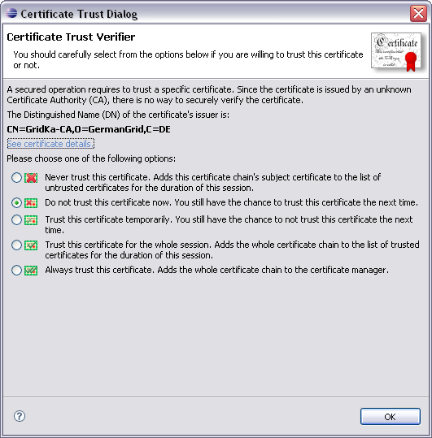

The Certificate Trust Dialog
Whenever an operation needs to trust a certificate that is not yet listed as a
trusted or untrusted certificate in the Security Preference Page, the Certificate
Trust Dialog is used to explicitly ask the user if she wants to trust this
particular certificate (chain). The following screenshot shows the Certificate
Trust Dialog:

In the dialog itself the issuer DN of the certificate is shown to the user. To
see more detailed information of the certificate (chain) one may use the
See certificate details link to bring up the
Certificate Info Dialog for this specific
certificate (chain).
To respond to the trust request, the user has five different options:
-
Never trust this certificate:
The certificate is untrusted and is added to the list as an untrusted certificate.
The certificate is not stored permanently as untrusted. Therefore after a
g-Eclipse restart, the user will be asked again whether to trust the certificate or not.
-
Do not trust this certificate now:
The certificate is untrusted but is not added to the list as untrusted certificate.
Therefore the user is asked again if they trust this certificate the next time a
trust is required.
-
Trust this certificate temporarily:
The certificate is trusted but is not added to the list as trusted certificate.
Therefore the user is asked again if they trust this certificate the next time a
trust is required.
-
Trust this certificate for the whole session:
The certificate is trusted and is added to the list as trusted certificate.
The certificate is not stored permanently as trusted. Therefore after a
g-Eclipse restart, the user will be asked again whether to trust the certificate or not.
-
Always trust this certificate:
The certificate is trusted and is added to the list as trusted certificate.
The certificate is stored permanently as trusted. Therefore after a
g-Eclipse restart the user will not be asked again if they trust the certificate.
It is important to carefully decide which certificate to
trust and which not. Therefore users are urged to carefully look at the
certificate's details when a trust decision has to be made!